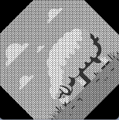
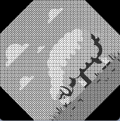

Introduction
Objective:
To demonstrate and analyze the process of image rotation as a linear transformation in R2 space, focusing on grayscale imagery.
Background:
This project investigates the mathematical concept of linear transformations, particularly rotation in a two-dimensional plane, and its practical application in image processing.
Concept and Implementation
Theory:
The project is centered around the rotation matrix, a linear transformation used for rotating vectors in a plane. Defined using sine (\(\sin\)) and cosine (\(\cos\)) functions, the matrix is pivotal for determining new coordinates after rotation, where \(\theta\) is the rotation angle. The simplicity of linear transformations is explored using grayscale images, which are 2D arrays of pixel intensities, in contrast to the more complex approach required for color images with multiple layers.
Tools:
The project utilizes Python for its powerful library support. OpenCV (cv2) is employed for image processing tasks, though the project specifically focuses on manually applying the rotation matrix to demonstrate the application of linear algebra in image manipulation. This approach offers a deeper understanding of the fundamental processes behind image rotation.
Process:
The implementation involves manually creating a rotation matrix based on a given angle, applying this matrix to each pixel of a grayscale image, and contrasting this approach with OpenCV's built-in rotation functions.
Example:
To illustrate the concept, consider rotating a pixel located at coordinates \((x, y)\) about the origin by an angle \(\theta\). The rotation matrix is shown below:

For a pixel at \((3, 4)\) rotated by \(45^\circ\), the new coordinates \((x', y')\) are calculated as follows:

Thus, the new coordinates of the pixel after rotation by \(45^\circ\) are approximately \((-1/\sqrt{2}, 7/\sqrt{2})\). This example demonstrates the practical application of the rotation matrix to a single pixel, which can be extended to every pixel in an image for a complete rotation transformation.
Python Code Implementation:
import cv2
import numpy as np
import math
def rotate_image_manual(image_path, angle):
# Load the image
image = cv2.imread(image_path, cv2.IMREAD_GRAYSCALE) # Load as grayscale for simplicity
height, width = image.shape
# Create a new image with the same size but filled with zeros (black)
rotated_image = np.zeros((height, width), dtype=np.uint8)
# Calculate the center of the image
center_y, center_x = height // 2, width // 2
# Convert the angle to radians
angle_rad = math.radians(angle)
# Create the rotation matrix
rotation_matrix = np.array([
[math.cos(angle_rad), -math.sin(angle_rad)],
[math.sin(angle_rad), math.cos(angle_rad)]
])
# Apply the transformation to each pixel
for y in range(height):
for x in range(width):
# Translate the pixel to origin and then rotate
yp = y - center_y
xp = x - center_x
new_x, new_y = np.matmul(rotation_matrix, np.array([xp, yp]))
# Translate back from the origin
new_x += center_x
new_y += center_y
# If the new position is within the bounds of the image, set the pixel
if 0 <= new_x < width and 0 <= new_y < height:
rotated_image[int(new_y), int(new_x)] = image[y, x]
# Display the original and rotated images
cv2.imshow('Original Image', image)
cv2.imshow('Rotated Image', rotated_image)
cv2.waitKey(0)
cv2.destroyAllWindows()
# Use the function
rotate_image_manual('path_to_your_image.jpg', -45) # Replace with your image path and desired rotation angle

 

Download Python Source Code...
Troubleshooting
Version issue:
TypeError: 'numpy._DTypeMeta' object is not subscriptable
Solution: In Anaconda.Navigator Terminal for Jupyter.Notebook, run the following command:
pip install numpy --upgrade
File path issue:
Solution: In Jupyter.Notebook, run the following command:
import os
# Define the desired directory path
new_directory = r"C:\path_to_your_image"
# Change the current working directory
os.chdir(new_directory)
# Verify the change
print("Current Working Directory: ", os.getcwd())
Results and Discussion
Findings:
The manual application of the rotation matrix effectively rotates the images, confirming the matrix's capability in transforming pixel positions.
Analysis:
These results underscore the importance of linear algebra in image processing. The project highlights the balance between theory and practice, demonstrating how abstract mathematical concepts can be directly applied to practical tasks like image rotation. The comparison with OpenCV's methods also sheds light on the complexities of handling color images versus grayscale images in the context of linear transformations.
Real-World Application
Practical Use:
This concept finds extensive use in image processing and computer graphics, particularly in applications that require precise control over image manipulation, such as photo editing and animation.
Conclusion
Summary:
This project effectively bridges the gap between theoretical mathematics and practical computer vision applications, illustrating the significance of linear transformation theory in real-world scenarios. By manually implementing the rotation matrix on grayscale images, it emphasizes the foundational role of mathematics in image processing and highlights the comparative simplicity of grayscale transformations over color image processing.
References
Literature and Resources: Lay, D. C. (2021). Linear Algebra and Its Applications (6th ed., p. 76, Section 1.9 The Matrix of a Linear Transformation). Pearson. ISBN-13: 978-0-13-585104-3.